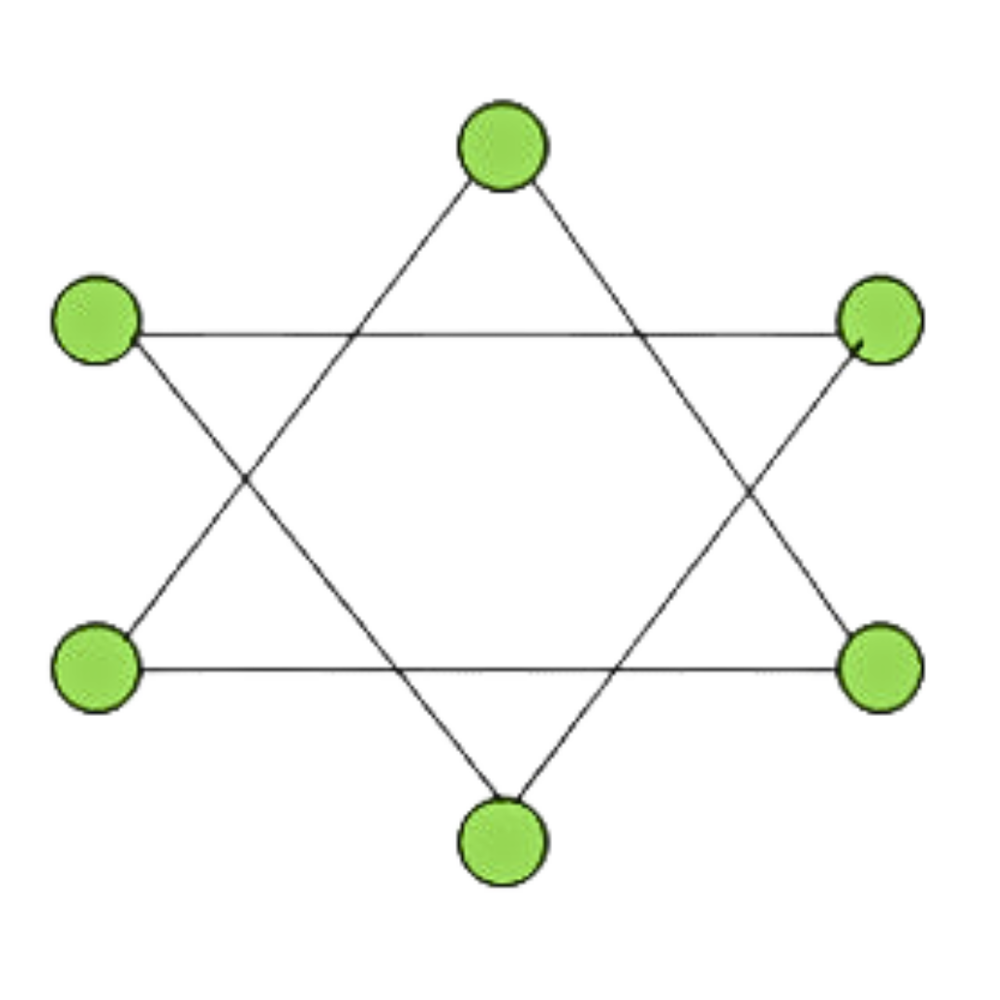
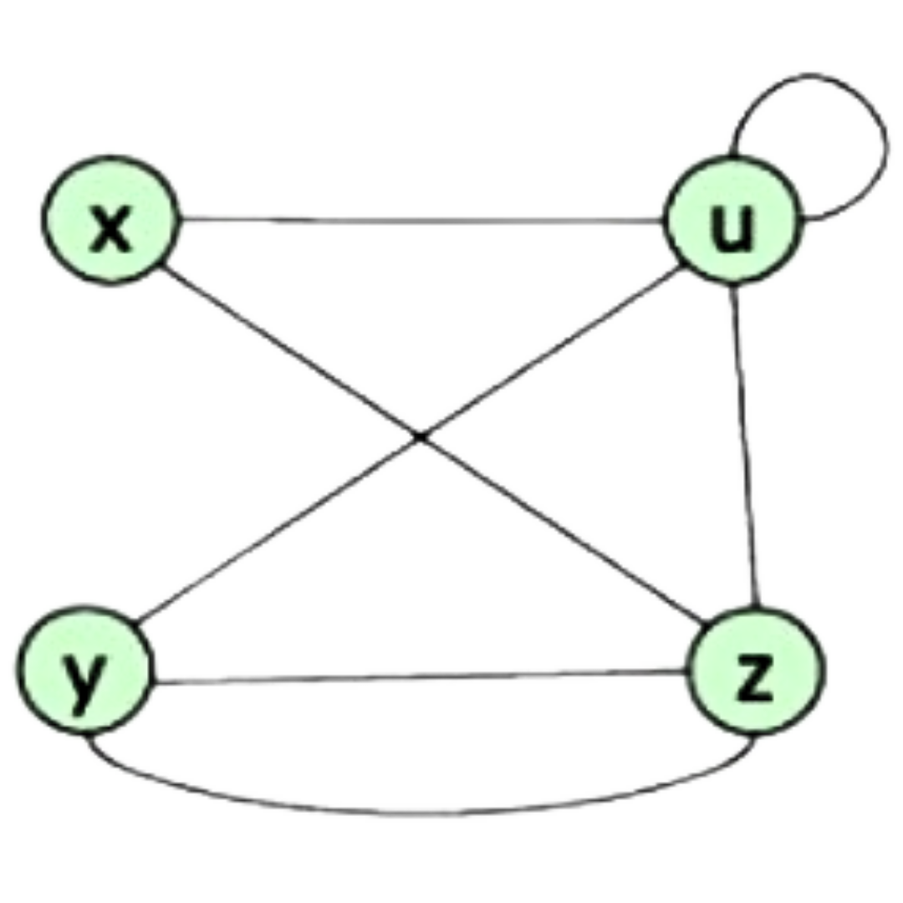
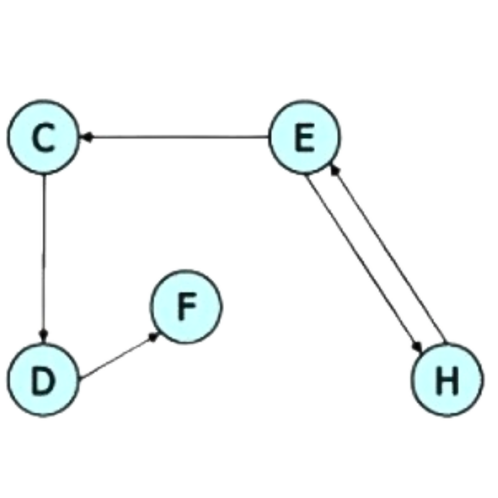

Inicio
Concepto
Dijkstra
Floyd Warshall
MST
Interactivo
Inicio
Concepto
Dijkstra
Floyd Warshall
MST
Concepto
G = (V, E)
V es el conjunto de vértices o nodos que representan los objetos
E es el conjunto de aristas o arcos que representan las relaciones entre nodos
Camino
Un camino desde un vértice a a otro b en un grafo es una secuencia finita de vértices que empieza en a y acaba en b
Cada par de vértices consecutivos son adyacente
Grado
El grado de un nodo es a cuantos nodos es adyacente
El grado de un grafo es la suma de los grados de cada nodo
Área de estudio de grafos
Redes de transporte
Redes de comunicación
Redes sociales
Biología y genética
Redes Neuronales
Gestión de proyectos
Sistemas de información geográfica
Existe el tipo de Grafo...
Simple
Sin bucles ni múltiples aristas entre el mismo par de vértices
Completo
Cada par de vértices está conectado por una arista
No completo
No todos los pares de vértices están conectados directamente
Bipartido
Los vértices se pueden dividir en dos conjuntos, donde las aristas solo conectan vértices de conjuntos diferentes
Inconexo

No hay camino entre al menos un par de vértices
Conexo
Existe al menos un camino entre cualquier par de vértices
Multigrafro

Permite múltiples aristas entre el mismo par de vértices. Arcos múltiples y bucles
No dirigido
Las aristas no tienen una dirección específica
Dirigido

las aristas tienen una dirección, indicando el flujo de un vértice a otro